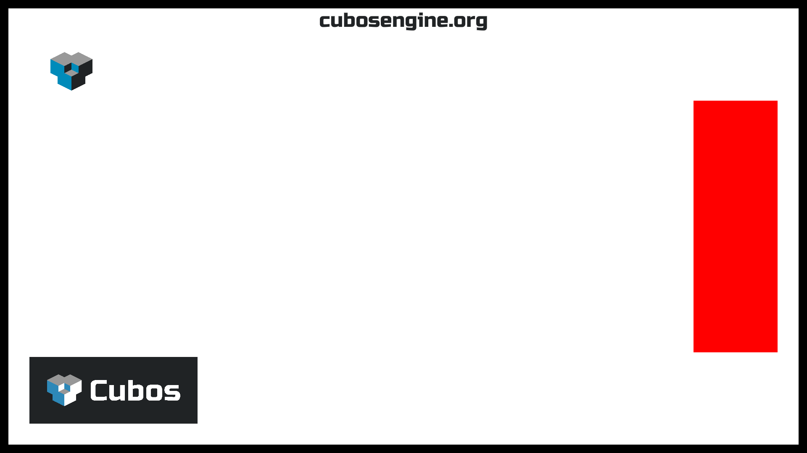

From Voxel collisions, point light shadows and an audio plugin, to web support, text rendering, and FXAA.
New 0.5 Features
This blog post covers the most important changes in the 0.5 release - we've added a lot of new features, such point light shadows, audio support, MSDF text rendering and more! We've released 0.5 some time ago, but with the exam season and the holidays, we only got around to writing this blog post now. As usual, you can check out the full changelog in our repository.
On the Editor
Hold mode for Debug Camera (@jdbaracho)
For debugging purposes, we have a debug camera which allows the user to move around the scene and inspect it. Previous this camera could only be controlled by locking the camera to the mouse with a toggle. This was inconvenient when also using the mouse to interact with the editor UI, so we added a new mode where the camera can be rotated by holding a key or mouse button (e.g. the middle mouse button).
On the Engine
Point Light Shadows (@tomas7770)
Over the past couple of releases, shadows have been gradually introduced to the engine's graphics renderer, starting with spotlight shadows, and then directional ones. Naturally, the next step was to implement shadows for point lights, finally completing support for the most common types of lights.
Point shadows are enabled by adding a PointShadowCaster component to the light entity. They behave similarly to spot shadows, lacking all the configurable values of the more complex directional shadows. You can read the previous blog posts for more detailed information (0.3, 0.4).
In terms of implementation, point shadows are also very similar to spot shadows, using a shared atlas texture that stores shadow maps for every point light in a quadtree structure. However, because point lights cast light in all directions, there are 6 atlas textures, one for each direction of a cube.
The final result of our shadows engine can be seen in the Shadows sample. Below is a screenshot of the sample with all light types casting shadows. Some tweaks have been done to better highlight the shadows.

Audio Support through the Audio Plugin (@Dageus, @diogomsmiranda)
This release is a significant milestone for the Cubos engine, as it finally introduces Audio functionality!
The new audioPlugin leverages the previously implemented Audio Context to manage audio playback. It introduces two new components:
AudioSource: Attach this component to entities to play audio files in supported formats such as FLAC, MP3 and WAV.AudioListener: Attach this component to an entity to capture audio from the scene.
With the plugin, you can now register listeners, and control audio sources with play, pause, and stop functionality. You can also customize audio playback by modifying the AudioSource properties for each entity, adjusting settings such as volume, pitch, and looping behavior to tailor the sound to your needs.
Due to restrictions in our audio backend, you can only have up to three active listeners at a time. For practical examples of how to use these new audio components (AudioPlay, AudioPause, AudioStop), check out our Audio Sample.
Method to save settings to files (@SrGesus)
The Settings resource was missing some way to interact with its corresponding file,
as it was limited to a startup system that would load the file from a command line
argument with no way for posterior changes to persist which was inconvenient.
Now there are two new simple methods - save(path, indentation) and
load(path) - to save and load the Settings to and from
cubos::core::data::FileSystem paths. E.g:
settings.merge(settings.load("/file.json")); settings.save("/file_backup.json");
Collision detection between VoxelCollisionShapes (@joaomanita)
The engine was only able to able to detect collisons between boxes, now we can add a VoxelCollisionShape to decompose a voxel shape into multiple box collision shapes.
Anti-aliasing using the FXAA technique (@kuukitenshi)
We introduced the FXAA (Fast Approximate Anti-Aliasing) technique to reduce jagged edges in the rendered images. As you can see in the images below, FXAA smooths out the visuals without the performance cost of traditional anti-aliasing methods.
UI text element using MSDF for text rendering (@mkuritsu)
A significant addition to the Cubos engine was the support for text rendering in the UI, which will greatly improve the capabilities for communicating with the player in future games developed with the engine.
This new features comes in the uiTextPlugin, which includes the UIText component, containing all the data needed to draw text on the screen. The plugin also adds two new asset types:
- Font: holds the raw font data to be used to create font atlases (.ttf and .otf files supported).
- FontAtlas: maps characters to their glyph on a given font, with different configurable properties.
In order to draw the text on the screen this plugins uses Multi Signed Distante Fields (MSDFs) with the help from msdfgen and msdf-atlas-gen, and FreeType to load different font formats. Below is a screenshot taken from the UI sample available in the engine showcasing the text rendering in action.
Note: Currently only the ASCII charset is supported, UTF-8 support will be added in a future release.
Enable assets to be identified in the code by their file path (@GalaxyCrush)
Assets could only be identified by their UUID, which can be hard to keep track of for human developers. Now, they are able to be identified by their path, thus making them easier to handle when developing projects with Cubos. E.g., you can now do:
Asset<Scene> SceneAsset = AnyAsset("/path/to/asset");
instead of:
Asset<Scene> SceneAsset = AnyAsset("uuid");
Option to use Shadow Normal Offset Bias algorithm (@GalaxyCrush)
We noticed that the shadows had some shadow acne and/or peter panning artifacts in some samples. So, to improve it, we implemented the option of using the Shadow Normal Offset Bias algorithm, which improved the quality of the shadows and reduced these artifacts. To use the algorithm, the user simply has to assign a value to the normalOffsetScale field in the light casters ShadowCaster.
Resource to easily configure constants in the physics solver (@GCeSilva)
The physics solver previously included hardcoded constants, which were not easily accessible or modifiable. A new resource has been added which allows the user to configure these constants, making it easier to tune and debug, even at runtime.
Contact caching for collision between box shapes (@fallenatlas)
We added contact caching as a first step towards implementing warm-starting. Contact caching consists of keeping information about collisions that were happening in the previous physics update so that in the next update we can trace them back. This information includes identifiers for each collision manifold and the corrections applied to each contact point. Due to limitations in the current implementation of collisions between entities, this is currently only supported for box shapes.
On the Core
A Proper CMake Configuration (@RiscadoA)
While functional, our CMake build configuration was incomplete in terms of features and poorly organized.
As the engine evolved, we recognized the need to install it as a system-wide library for use in other projects.
Before, we always simply added the engine repository as a git submodule in our projects, which required maintaining a local copy of the entire codebase for each project - an inneficient approach.
To address this, we decided to clean up the CMake configuration, and add installation and find_package support. As a result, you can now install the whole Cubos project, and to use it in another project, you only need to include the following lines in your CMakeLists.txt:
find_package(cubos REQUIRED) target_link_libraries(your_game PRIVATE cubos::engine)
One big advantage of this is that we can now also install Quadrados and Tesseratos, the tools we use for making games with Cubos, system-wide, as you would with any other application. As of now, Cubos has only been packaged for NixOS, but we haven't contributed it to the Nixpkgs repository yet. We plan to do so in the future, and also to package it for other distributions.
Web Support with Emscripten (@RiscadoA, @luishfonseca)
We've had a pull request open since 0.2 for porting Cubos to the web with Emscripten, but it was constantly postponed due to some blocking issues being present, and us being focused on other features. Now, we finally made the final push to get it working, and now Cubos can be compiled to WebAssembly and ran in the browser!
This is an important feature, as for game jams, for example, it's handy to be able to share your game with others without them having to download anything, and also to be able to play it on any device. It's a good way to showcase the engine to people who might be interested in using it, but are reluctant to download it. We plan on embedding each sample on their respective documentation page, but that will be left for a future release.
One of the major challenges was guaranteeing compatibility with WebGL2. Fortunately, the rendering code is built on top of a rendering API abstraction layer. We had to make some changes to this layer to guarantee we cover strictly the intersection between the features of OpenGL 3.3 and WebGL2, but we managed to do it without much hassle. As of now, this means we're making some performance sacrifices, as we're not using advanced features even when they're available. We plan to address this in the future.
Next Steps
In the next release, which should be out by February 6th, we're planning to work on the following features:
- Toggleable gravity on the physics plugin.
- Warm starting in physics solver.
- Graphics performance improvements.
- Transparent voxel rendering.
- Particle system.
- Editor UX improvements, making it very useful.
- New scene editor.
We also developed a demo showcasing the new features of this release, which you will be able to check out pretty soon here.
You can check out the full list of stuff we want to get done in the milestone for the next release.